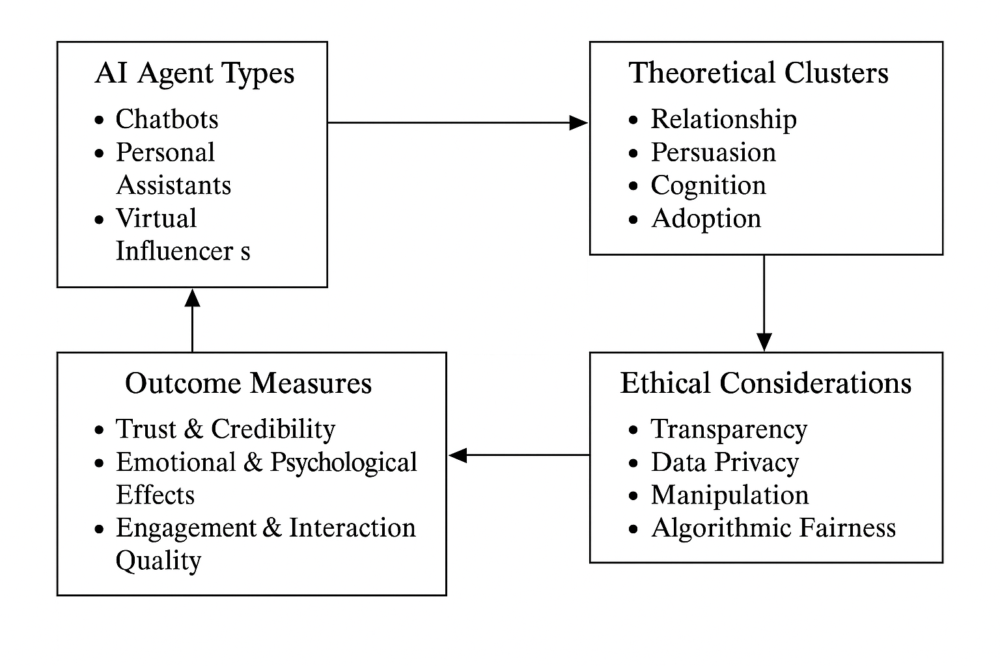
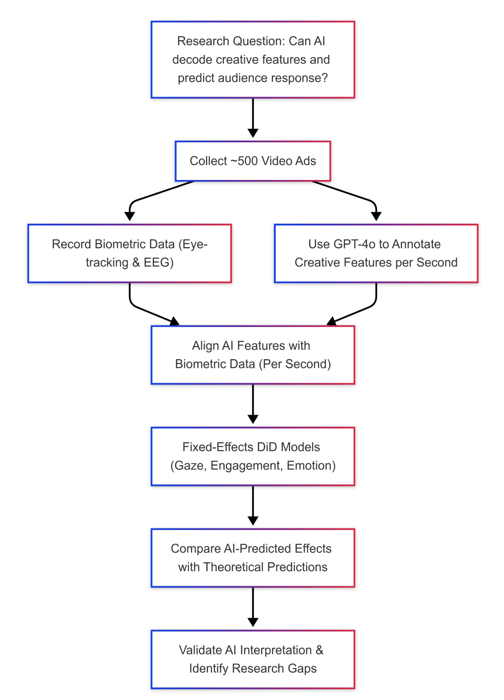
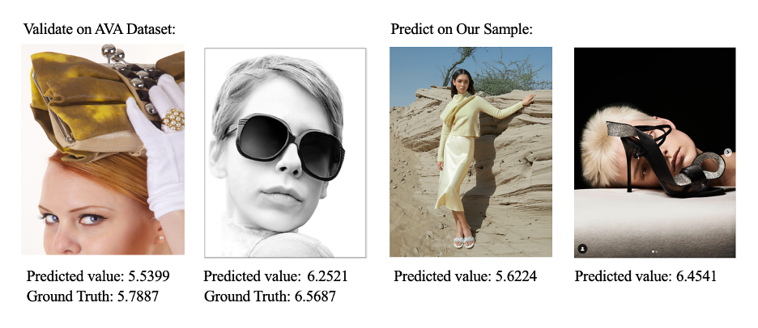
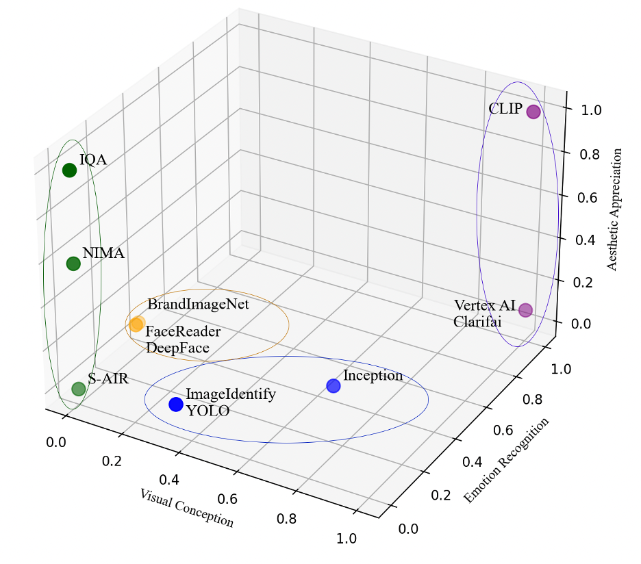
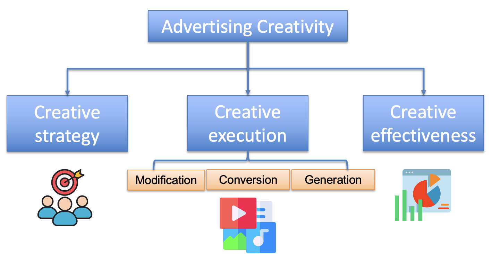
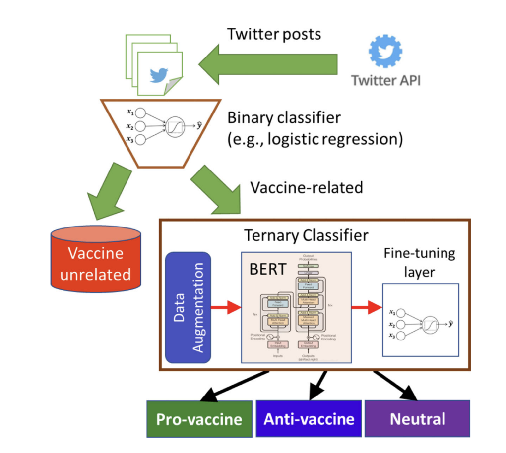
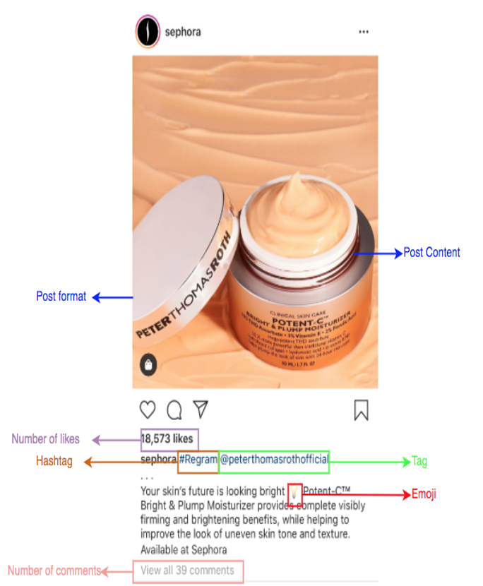
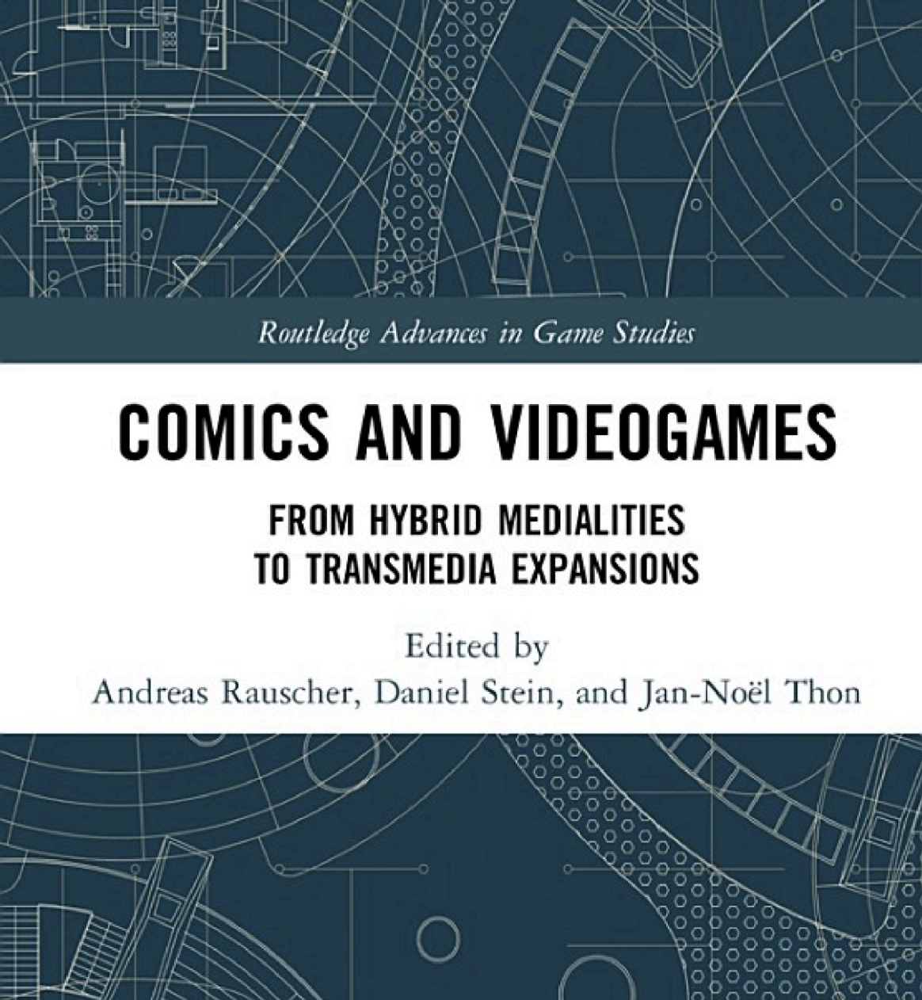
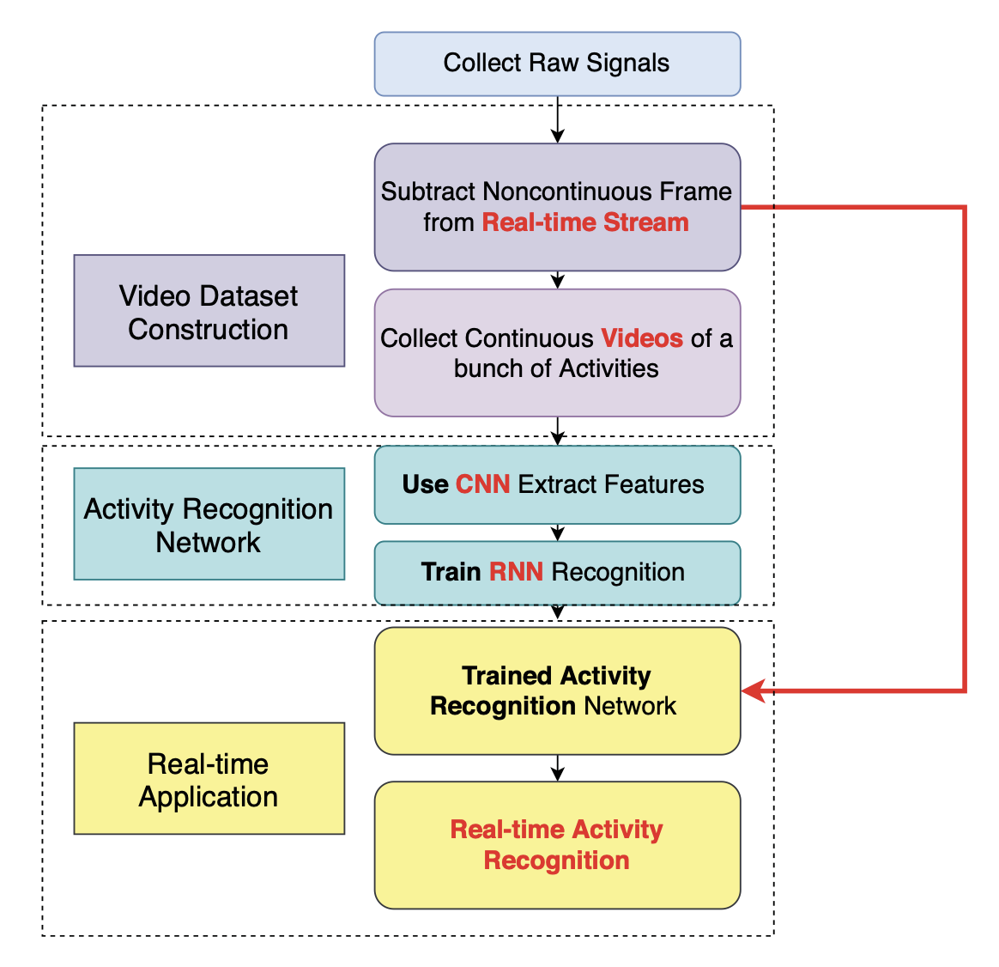
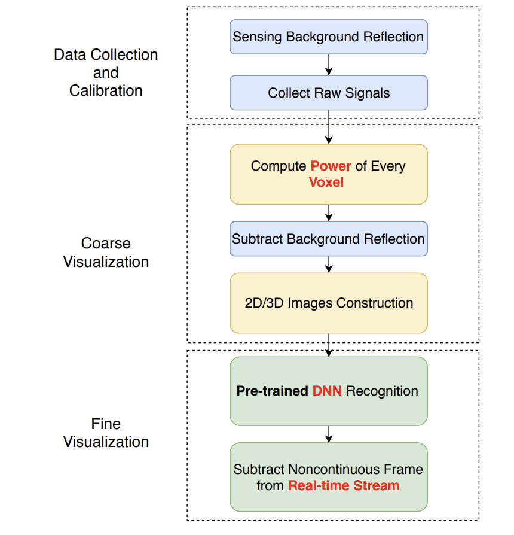

Nan ZhangPh.D. Candidate in Information & Media, Michigan State University Email / Google Scholar / ORCID / CV |
I’m a computer scientist by training (B.S., M.S.) turned advertising researcher. I’m a Ph.D. candidate in Information & Media at Michigan State University, advised by Hairong Li (expected May 2026). My work focuses on AI agents, machine learning, and multimodal models to analyze and optimize consumer-facing advertising.
Below is a selection of my recent publications.
|  |
Zhang, N., & Li, H. (in prep). Synthesizes 63 peer-reviewed articles (2020–2025) on AI-powered agents (chatbots, virtual influencers, assistants) in advertising, mapping typologies, theories, outcomes, and ethical gaps. |
|  |
Zhang, N., & Li, H. & advertising agency (in prep). Using GPT-4o to annotate ~500 video ads (30+ creative features) and aligning with eye-tracking & EEG data. Initial results show AI-detected features significantly predict attention, engagement, and emotion. |
|  |
Zhang, N., & Li, H. (in prep). Mines 49,821 posts from 1,941 fashion retailers (Jan–Mar 2023) with NIMA, YOLOv5 & DeepFace to quantify multimodal features. Preliminary NB models show aesthetic scores boost likes and shape comment behavior. |
|  |
Hairong Li; Nan Zhang Journal of Advertising, Themed Issue: Computational Advertising Research Methodology Selected as a proposal and present at Minnesota Computational Advertising Research Thought Leadership Forum (TLF) Read the paper here |
|  |
Nan Zhang; Hairong Li AEJMC 2023 Refereed Research Session: AI and Computational Advertising Read the paper here |
|  |
Argyris, Young Anna; Nan Zhang; Bashyal, Bidhan; Tan, Pang-Ning IEEE International Conference on Digital Health (ICDH) 2022 Read the paper here |
|  |
Nan Zhang; Miao Guo Broadcast Education Association (BEA) 2021 — 1st place winner Read the paper here |
|  |
Robert Alan Brookey; Nan Zhang Comics and Videogames - Book chapter, 2020 Read the book chapter here |
|  |
Hanqing Guo, Nan Zhang, Shaoen Wu, Qing Yang IEEE ICC 2020 Read the paper here |
|  |
Hanqing Guo, Nan Zhang, Wenjun Shi, Saeed Ali-AlQarni, Shaoen Wu, Honggang Wang IEEE ICME 2019 Read the paper here |
|
May 2024 – Aug 2024 Michigan State University |
Teaching Assistant, Data Camp
|
|
May 2023 – Aug 2023 Michigan State University |
Instructor of Advertising (Data Anlytics)
|
|
Aug 2020 – May 2021 Aug 2022 – May 2024 Michigan State University |
Teaching Assistant of Advertising
|
|
Aug 2016 – May 2018 Aug 2019 – May 2020 Ball State University |
Teaching Assistant of Computer Science
|
Michigan State University | Aug 2020 – May 2026
Ball State University | Aug 2016 – May 2020
Ball State University | Aug 2012 – May 2016
Graduated magna cum laude